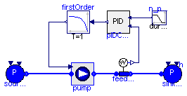

Closed-loop test cases
Package Content

Modelica definition
model TestPumpControl
import ThermoPower;
package FluidMedium = ThermoPower.Water.StandardWater;
Water.SinkP sinkToEcLP_p( h=2.440e5, p0=7.19e5);
Water.SourceP sourceShLP(
redeclare package Medium = FluidMedium,
p0=5398.2,
h=1.43495e5);
public
Modelica.Blocks.Sources.Ramp n_pump(
duration=100,
offset=89.9,
startTime=500,
height=0);
ThermoPower.PowerPlants.Control.PID pIDController(
CSmin=500,
PVmin=-1,
PVmax=1,
CSmax=2500,
Ti=200,
Kp=4);
public
ThermoPower.PowerPlants.HRSG.Components.PrescribedSpeedPump pump(
rho_nom=1000,
redeclare package WaterMedium = FluidMedium,
q_nom={0.0898,0,0.1},
head_nom={72.74,130,0},
nominalSteamPressure=7.19048e5,
nominalCondensationPressure=5398.2,
nominalSteamFlow=89.8,
hstart=1.43495e5,
n0=1500,
feedWaterPump(redeclare function efficiencyCharacteristic =
Functions.PumpCharacteristics.constantEfficiency (eta_nom=0.6)));
ThermoPower.Water.SensW feed_w(redeclare package Medium = FluidMedium);
Modelica.Blocks.Continuous.FirstOrder firstOrder(y_start=1512, T=1);
equation
connect(n_pump.y, pIDController.SP);
connect(feed_w.inlet, pump.outlet);
connect(sourceShLP.flange, pump.inlet);
connect(feed_w.outlet, sinkToEcLP_p.flange);
connect(pIDController.PV, feed_w.w);
connect(pIDController.CS, firstOrder.u);
connect(firstOrder.y, pump.pumpSpeed_rpm);
end TestPumpControl;

Modelica definition
model TestHRSG_wac
package FlueGasMedium = ThermoPower.Media.FlueGas;
package FluidMedium = ThermoPower.Water.StandardWater;
Gas.SourceW sourceGas(
redeclare package Medium = FlueGasMedium,
w0=585.5,
T=884.65);
Gas.SinkP sinkGas(redeclare package Medium = FlueGasMedium, T=379.448);
ThermoPower.PowerPlants.HRSG.Components.StateReader_gas stateGas_in(
redeclare package Medium =
FlueGasMedium);
ThermoPower.PowerPlants.HRSG.Components.StateReader_gas stateGas_out(
redeclare package Medium =
FlueGasMedium);
ThermoPower.PowerPlants.HRSG.Components.StateReader_water stateShHP_out(
redeclare package Medium = FluidMedium);
ThermoPower.PowerPlants.HRSG.Components.StateReader_water stateShLP_out(
redeclare package Medium = FluidMedium);
ThermoPower.PowerPlants.HRSG.Components.StateReader_water stateRhIP_out(
redeclare package Medium =
FluidMedium);
ThermoPower.PowerPlants.HRSG.Components.StateReader_water stateRhIP_in(
redeclare package Medium =
FluidMedium);
Examples.HRSG_3LRh hRSG(redeclare package FlueGasMedium =
FlueGasMedium, redeclare
package FluidMedium = FluidMedium,
drums(SSInit=true),
HeatExchangersGroup(SSInit=true));
Water.SinkP OutLP(redeclare package Medium = FluidMedium,
p0=5389.2,
h=2.3854e6);
Water.SteamTurbineStodola turbineHP(
pstart_in=1.28e7,
pstart_out=2.98e6,
wstart=67.6,
hstartin=3.47e6,
hstartout=3.1076e6,
wnom=67.6,
eta_iso_nom=0.833,
Kt=0.0032078);
Water.SteamTurbineStodola turbineIP(
pstart_in=2.68e6,
pstart_out=6e5,
wstart=81.10,
hstartin=3.554e6,
hstartout=3.1281e6,
wnom=81.10,
eta_iso_nom=0.903,
Kt=0.018883);
Water.SteamTurbineStodola turbineLP(
pstart_in=6e5,
pstart_out=5.3982e3,
wstart=89.82,
hstartin=3.109e6,
hstartout=2.3854e6,
wnom=89.82,
eta_iso_nom=0.903,
Kt=0.078004);
Water.Mixer mixLP(
redeclare package Medium = FluidMedium,
V=10,
pstart=7.19e5,
hstart=2.89295e6,
initOpt=ThermoPower.Choices.Init.Options.steadyState);
Modelica.Mechanics.Rotational.ConstantSpeed constantSpeed(w_fixed=
314.16/2);
Water.SourceP sourceShLP(
redeclare package Medium = FluidMedium,
p0=5398.2,
h=1.43495e5);
ThermoPower.PowerPlants.HRSG.Control.levelsControl levelsControlSimplified(
Level_HP(steadyStateInit=true),
Level_IP(steadyStateInit=true),
Level_LP(steadyStateInit=true));
Components.PrescribedSpeedPump totalFeedPump(
redeclare package WaterMedium = FluidMedium,
rho_nom=1000,
q_nom={0.0898,0,0.1},
head_nom={72.74,130,0},
nominalCondensationPressure=5398.2,
nominalSteamFlow=89.8,
n0=1500,
hstart=1.43495e5,
nominalSteamPressure=6e5);
protected
Buses.Actuators actuators;
equation
connect(stateGas_in.inlet, sourceGas.flange);
connect(sinkGas.flange, stateGas_out.outlet);
connect(stateGas_in.outlet, hRSG.GasIn);
connect(stateGas_out.inlet, hRSG.GasOut);
connect(stateShLP_out.inlet, hRSG.Sh_LP_Out);
connect(stateRhIP_out.inlet, hRSG.Rh_IP_Out);
connect(stateRhIP_in.outlet, hRSG.Rh_IP_In);
connect(stateShHP_out.inlet, hRSG.Sh_HP_Out);
connect(OutLP.flange, turbineLP.outlet);
connect(turbineHP.shaft_b, turbineIP.shaft_a);
connect(turbineIP.shaft_b, turbineLP.shaft_a);
connect(mixLP.in2, turbineIP.outlet);
connect(constantSpeed.flange, turbineLP.shaft_b);
connect(turbineLP.inlet, mixLP.out);
connect(mixLP.in1, stateShLP_out.outlet);
connect(turbineHP.inlet, stateShHP_out.outlet);
connect(turbineIP.inlet, stateRhIP_out.outlet);
connect(levelsControlSimplified.SensorsBus, hRSG.SensorsBus);
connect(levelsControlSimplified.ActuatorsBus, hRSG.ActuatorsBus);
connect(sourceShLP.flange, totalFeedPump.inlet);
connect(actuators, levelsControlSimplified.ActuatorsBus);
connect(totalFeedPump.pumpSpeed_rpm, actuators.nPump_feedLP);
connect(totalFeedPump.outlet, hRSG.WaterIn);
connect(turbineHP.outlet, stateRhIP_in.inlet);
end TestHRSG_wac;
HTML-documentation generated by Dymola Tue Jul 07 01:24:39 2009.